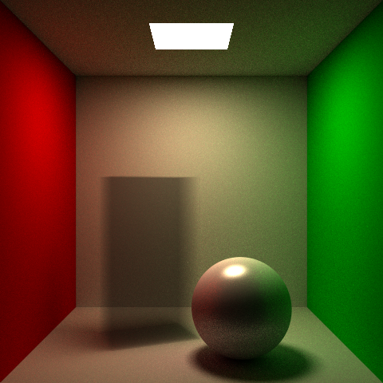
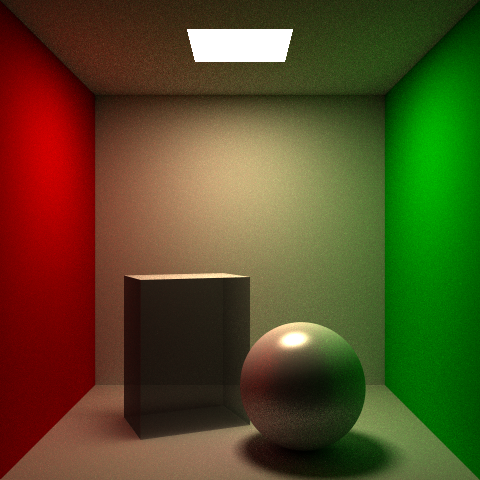
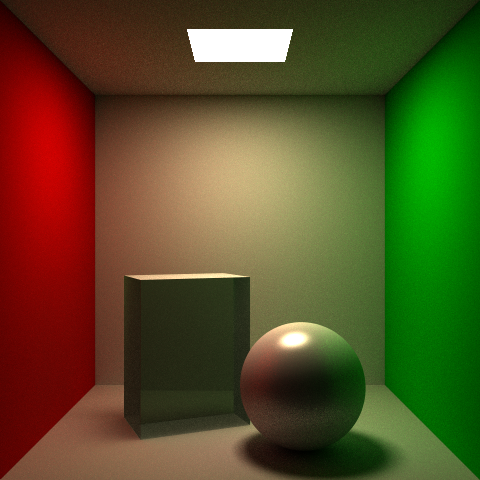
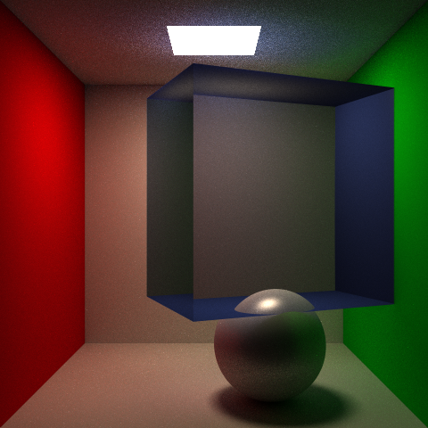

The aim of this project (the final project for CSE 168) was to use physically-accurate techniques to produce attractive images of rendered bounded volumes, such as glass, gel, or fog. I modified my Optix pathtracer implementation to achieve this.
Initially (as noted in the milestone), there was a persistent bug with banding. It turned out that the bug was limited to spheres, and that it was very unclear where it was coming from, so I opted to continue with only triangles being rendered as volume boundaries. I proceeded to also add attenuated shadow rays, so that volumes would not always have full shadows. Below is a picture of exponential distance attenuation applied to a box, with partial shadows.
Next I added a surface BSDF. I used a variant of the glass bsdf, in which the decision on whether to reflect or transmit is based on a calculation of the Fresnel term (via Schlick's Approximation). If transmitting, the direction remains unchanged, while if reflecting, it follows the previously implemented phong brdf. Then, I added support for single scattering at a random point in between each pair of collisions inside a volume, with an isometric (1/4pi) phase function. See image below.
Next, I added support for emission, attenuated by absorption. I also went back and modified the phase function I used, from isometric to Henyey-Greenstein. In a similar vein, I changed the transmission code in the BSDF to use Snell's law of refraction, changing direction based on the indices of refraction of the two mediums. Now I was able to produce, for example, colored glass (g= -0.75, for backscatter):
With some experimentation in specular color, index of refraction, absorption and scattering coefficients, and emission, I was able to produce these images [ice cube, jade dragon, gel dragon, glass dragon]:
